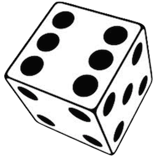
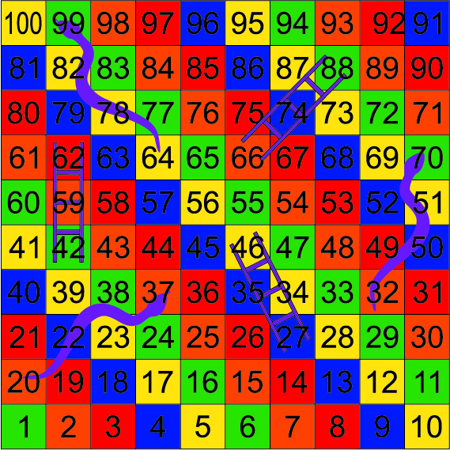
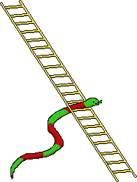
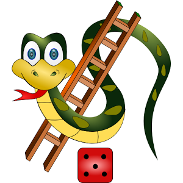
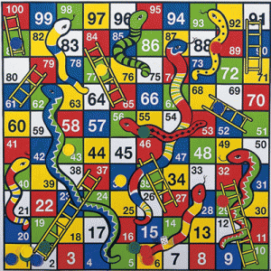
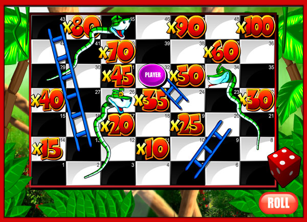

Welcome to the world of Snakes and Ladders
How to play the game
The object of the game is to be the first player to reach the end by moving across the board from square one to the final square. Most boards wrap back and forth, so you move left to right across first row, then move up to the second and move right to left, and so on.
Number 1

Follow the numbers on the board to see how to move forward. For example, if you rolled a five and you were on space number 11, then you would move your game piece to space number 16.
Number 2
Decide who goes first. Each player should roll one die to see who gets the highest number. Whoever rolls the highest number gets to take the first turn. After the first player takes a turn, the person sitting to that player’s left will take a turn. Play continues in a circle going left.
Number 3
Roll the die and move. To take your turn, roll the die again and read the number that you rolled. Pick up your game piece and move forward that number of spaces. For example, if you roll a two, move your piece to square two. On your next turn, if you roll a five, move your piece forward five squares, ending up on square seven.
Number 4
Climb up ladders. The ladders on the game board allow you to move upwards and get ahead faster. If you land exactly on a square that shows an image of the bottom of a ladder, then you may move your game piece all the way up to the square at the top of the ladder.
Number 5
Slide down snakes or chutes. Some versions have snakes on the board, while others have chutes (slides). Snakes (or chutes) move you back on the board because you have to slide down them. If you land exactly at the top of a snake or chute, slide your game piece all the way to the square at the bottom of the snake or chute.
Number 6
Take an extra turn if you roll a six. If you roll a six, then you get an extra turn. First, move your piece forward six squares and then roll the die again. If you land on any snakes or ladders, follow the instructions above to move up or down and then roll again to take your extra turn. As long as you keep rolling sixes, you can keep moving!
Number 7
Land exactly on the last square to win. The first person to reach the highest square on the board wins, usually square 100. But there's a twist! If you roll too high, your piece "bounces" off the last square and moves back. You can only win by rolling the exact number needed to land on the last square.